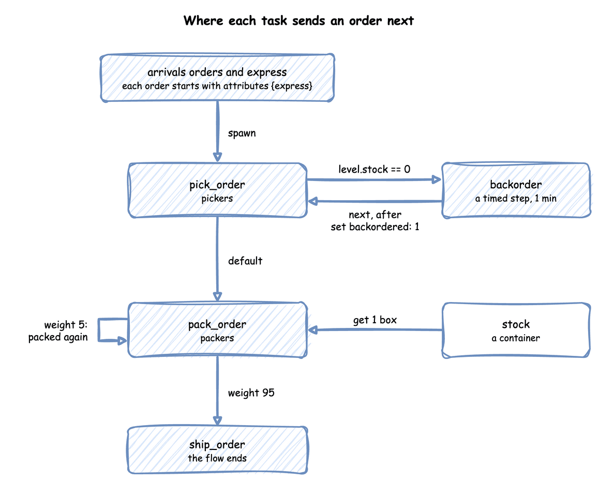

Until now an order was one task: it was packed and left. A real order is picked from the shelves, packed and shipped. Sometimes an item is out of stock, and sometimes a parcel fails its check and is packed again. This page asks: how do orders move through pick, pack and ship?
Decision: how much work to plan for beyond one pick and one pack per order.
Measures: two shares: how many orders go to backorder, and how many parcels are packed again.
Runs: one run of an hour with the seed 42, from an order's arrival to its shipment, with the supplier modelled only as a delay.
Assumptions: orders arrive at random, each picking time is equally likely to be anywhere from 1 to 3 seconds, and packing always takes 1.5 seconds.
What You Will Learn
This page shows how to:
chain tasks so an order is picked, packed and shipped;
route a share of the orders to backorder or back to packing;
carry an attribute, such as express, through the flow.
What You Add
This page adds three tasks in a row: pick_order, pack_order and ship_order. It also adds a backorder delay for an order picked while the shelf of boxes from Stock is empty, and an express attribute that each order carries. The shop is set up as follows:
It has two pickers and two packers.
A regular order arrives every 2.5 seconds on average (24 a minute, rate: 0.4), and an express order every 10 seconds (6 a minute, rate: 0.1).
A delivery of 53 boxes comes every 100 seconds, a little more than the orders take.
Picking time is uniform from 1 to 3 seconds only to keep the example short. Common Mistakes explains why a real study fits a distribution to measured times instead, as Choosing Inputs does.
Look at the flow first:

Chain the Tasks
Choosing where an entity goes next is called routing. In desflow a task names what follows it with next. Tasks and Processes describes tasks. next takes one of three forms:
a task name, which always leads there;
a list of when rules, each a condition and a task: the first rule that holds wins, and default catches the rest;
pick_order:service:pickingresource:pickerspayload:{event_type:order_picked}# The first rule that holds wins; default catches the restnext:when:-{condition:"level.stock==0", task:backorder}default:pack_order
Here the arrival loop passes the context to each task after its id. A task started by next receives the same arguments as the task before it. So every task function in the flow declares context.
# The first rule that holds wins; default catches the rest@app.task(service_id="picking",resource_id="pickers",next={"when":[{"condition":"level.stock == 0","task":"backorder"}],"default":"pack_order",},)defpick_order(task_id:int,context:SimulationContext):return{"event_type":"order_picked"}
# The first rule that holds wins; default catches the rest"pick_order":Router({"when":[{"condition":"level.stock == 0","task":"backorder"}],"default":"pack_order",}),
A Router takes the same rules as next and returns the name of the task to start. When a task finishes, its process asks the router and runs the next task with yield from, in the same process and the same step, with the same entity:
entity.attributes.update(SETS.get(name,{}))upstream=Upstream(task_id,entity.key,entity.attributes,finished)following=ROUTES[name].choose(upstream,env,levels={"stock":shop["stock"]})iffollowingisNone:env.stats.flow_finished(entity.arrival)# the order leaves the shopreturninstance=next(counters[following])yield fromtask(env,sampler,shop,following,entity,instance,counters)
In SimPy terms, yield from runs a generator inside the current process, so the next task is the next statement of one process. A process that started the next task with env.process(...) would begin it in a later step, and at a tie it would ask for a unit after the processes already started. SimPy and desflow describes processes.
The rule reads level.stock, the level of the container stock, at the moment picking finishes. Stores and Containers describes containers. Each name in a condition says where its value comes from: level. for a store or container, attr. for the entity's attributes, payload. for the finished task's payload, and registry["..."] for a live parameter. Task Flow lists everything a condition can use.
Every event of every task carries the order's key, orders-1, so one order can be followed through its whole flow. task names the task, and instance numbers its runs. Each task has one counter, shared by its arrivals and by next, so a re-pick after a backorder gets a new id. In the full builder file the arrival loops take the id from context.next_instance("pick_order"), and the low-level file keeps one counters entry per task.
Out of Stock
An order picked while the shelf is empty waits for the supplier for a minute, then is picked again. The wait uses no picker or packer, so backorder has a service and no resource: a timed step. It publishes started at once, with no queued event, waits the sampled time, and publishes its finished event:
backorder:# A timed step: a service and no resource, so it starts at onceservice:supplyingpayload:{event_type:order_backordered}# Applied to the order's attributes when the step finishesset:{backordered:1}next:pick_order
# A timed step: a service and no resource, so it starts at once. `set` is applied# to the order's attributes when the step finishes.@app.task(service_id="supplying",set={"backordered":1},next="pick_order")defbackorder(task_id:int,context:SimulationContext):return{"event_type":"order_backordered"}
# Applied to the order's attributes when the step finishesSETS={"backorder":{"backordered":1}}
next: pick_order sends the order back to an earlier task. A route back is allowed anywhere in a flow.
Rework
One parcel in 20 fails its check and is packed again. Sending work back to a task it has passed is called rework. weights chooses the next task at random, in proportion to the weights. A weight of infinity or true is refused when the blueprint loads. It draws from the routing task's own random number stream, route.pack_order. So a seeded run repeats, and the choice does not change any other draw:
pack_order:service:packingresource:packersget:{container:stock, amount:1}payload:{event_type:order_packed}# One parcel in 20 fails its check and is packed againnext:weights:{ship_order:95, pack_order:5}
# One parcel in 20 fails its check and is packed again@app.task(service_id="packing",resource_id="packers",get={"container":"stock","amount":1},next={"weights":{"ship_order":95,"pack_order":5}},)defpack_order(task_id:int,context:SimulationContext):return{"event_type":"order_packed"}
# One parcel in 20 fails its check and is packed again; the generator is set# in run below"pack_order":Router({"weights":{"ship_order":95,"pack_order":5}}),
The low-level router needs a generator to draw from: ROUTES["pack_order"].rng = sampler.generator("route.pack_order") in run, the stream the builder uses.
Carry Attributes
An order is an entity with attributes: values it carries from task to task, such as whether it is express. The arrival gives each new entity its starting attributes, and set on a task changes them when the task finishes, as backorder does with backordered: 1:
arrivals:# Each order starts with the attributes given here, read as attr.<name>orders:dist:exponentialrate:0.4spawn:pick_orderattributes:{express:0}express:dist:exponentialrate:0.1spawn:pick_orderattributes:{express:1}
# Each order starts with the attributes given here, read as attr.<name>app.add_arrival("orders",dist="exponential",rate=0.4,attributes={"express":0})app.add_arrival("express",dist="exponential",rate=0.1,attributes={"express":1})
# Each order starts with the attributes given here, read as attr.<name>ATTRIBUTES={"orders":{"express":0},"express":{"express":1}}
Entity(key, arrival, attributes) is the order, created by the arrival process; the full file below shows it.
Attributes are not published. A condition reads them as attr.express, and a payload includes them only when it names them. ship_order names express and backordered, so its finished event carries both. This is orders-172, which was picked while the shelf was empty, backordered, picked again and packed twice. Every tab prints its records to the terminal, so grep finds the order's lines:
A shop with several tasks is a network: each task's rate comes from the tasks before it. This version of the shop checks every packed order with one checker, and sends one order in ten back to be packed again. A weight in next.weights is a number or an expression read when the task finishes, such as attr.w, registry[...], level.<store> or t, with no bare name. The draw is one number from route.<task>. A result below 0, or text that is not a number, fails the run with the weight's name, and weights that add up to 0 fail the run. desflow explain makes the cumulative shares once, for numbers only, and gives no shares for expression weights:
arrivals:orders:{dist:exponential, rate:1.6, spawn:pack_order}services:packing:{dist:constant, value:1.5 s}checking:{dist:exponential, rate:2.5}# 0.4 s on averageresources:packers:{current_cap:4, max_cap:10}checkers:{current_cap:1, max_cap:4}tasks:pack_order:service:packingresource:packerspayload:{event_type:order_packed}next:check_ordercheck_order:service:checkingresource:checkerspayload:{event_type:order_checked}# Nine in ten pass; the tenth is packed againnext:weights:{ship_order:9, pack_order:1}ship_order:payload:{event_type:order_shipped}
app=SimulationContext(sim_id="Shop",factor=0,random_seed=42)app.add_arrival("orders",dist="exponential",rate=1.6,spawn="pack_order")app.add_service("packing",dist="constant",value=1.5)app.add_service("checking",dist="exponential",rate=2.5)# 0.4 s on averageapp.add_resource("packers",current_cap=4,max_cap=10)app.add_resource("checkers",current_cap=1,max_cap=4)@app.task(service_id="packing",resource_id="packers",next="check_order")defpack_order(task_id):return{"event_type":"order_packed"}# Nine in ten pass; the tenth is packed again@app.task(service_id="checking",resource_id="checkers",next={"weights":{"ship_order":9,"pack_order":1}},)defcheck_order(task_id):return{"event_type":"order_checked"}@app.task()defship_order(task_id):return{"event_type":"order_shipped"}# print(render_terminal(app.analyze())) prints what desflow explain prints
NETWORK=SimParameter(sim_id="Shop",arrival={"orders":DistributionConfig(dist="exponential",rate=1.6)},service={"packing":DistributionConfig(dist="constant",value=1.5),# One check takes 0.4 s on average"checking":DistributionConfig(dist="exponential",rate=2.5),},resources={"packers":CapacityConfig(current_cap=4,max_cap=10),"checkers":CapacityConfig(current_cap=1,max_cap=4),},)# Each task's service and resource, and the task after itSTEPS={"pack_order":("packing","packers",Router("check_order")),# Nine in ten pass; the tenth is packed again"check_order":("checking","checkers",Router({"weights":{"ship_order":9,"pack_order":1}}),),"ship_order":(None,None,Router(None)),}defstep(env,sampler,shop,name,entity,counters):"""One task of an order, then the task its router chooses."""service,resource,router=STEPS[name]task_id=next(counters[name])ifresourceisNone:env.stats.task_finished(name,task_id)else:env.stats.task_queued(name,task_id)withshop[resource].request()asrequest:yieldrequestenv.stats.task_started(name,task_id)config=env.registry.get_config(f"Shop.service.{service}")yieldenv.timeout(sampler.sample(config))env.stats.task_finished(name,task_id)following=router.choose(Upstream(task_id,entity,{},{}),env)iffollowingisNone:env.stats.flow_finished("orders")else:yield fromstep(env,sampler,shop,following,entity,counters)
Router is the object that chooses the task after a finished one, from the same next rule a blueprint uses: a name, when rules or weights. Upstream is what the finished task hands it: the instance id, the entity key, the entity's attributes and the payload. Here no condition reads them, so the router gets an empty Upstream with the entity. counters gives each task's instance numbers, counting from 0. flow_finished tells the statistics that the order has left the shop.
desflow explain does not support low-level models. It reads which arrival starts which task and which resource each task uses, and a low-level model does not declare those links: its SimPy code makes them as it runs.
Every packed order is checked. Packing receives the new orders, 1.6 a second, and also the tenth of the checked orders that come back. Call the rate into packing x: then x = 1.6 + 0.1 × x, which gives x = 1.6 ÷ 0.9 = 1.778 orders a second. desflow explain queues_network.yaml solves this flow balance for every task. This is its output without the hints at the end:
Shop
`-- orders (arrival, rate 1.6/s)
`-- spawn -> pack_order (task, rate 1.778/s)
+-- uses packers (resource)
`-- next (share 1) -> check_order (task, rate 1.778/s)
+-- uses checkers (resource)
+-- next (share 0.9) -> ship_order (task, rate 1.6/s)
| `-- next (share 1) -> exit
`-- next (share 0.1) -> pack_order (again)
Resources
+----------------------------------------------------------+
| resource | λ | μ | c | ρ | Wq | L | status |
|----------+-------+--------+---+--------+----+---+--------|
| packers | 1.778 | 0.6667 | 4 | 0.6667 | - | - | OK |
| checkers | 1.778 | 2.5 | 1 | 0.7111 | - | - | OK |
+----------------------------------------------------------+
packers by units
+-------------------------+
| c | ρ | status |
|----+--------+-----------|
| 1 | 2.667 | UNSTABLE |
| 2 | 1.333 | UNSTABLE |
| 3 | 0.8889 | CONGESTED |
| 4 | 0.6667 | OK |
| 5 | 0.5333 | OK |
| 6 | 0.4444 | OK |
| 7 | 0.381 | OK |
| 8 | 0.3333 | OK |
| 9 | 0.2963 | OK |
| 10 | 0.2667 | OK |
+-------------------------+
checkers by units
+---------------------+
| c | ρ | status |
|---+--------+--------|
| 1 | 0.7111 | OK |
| 2 | 0.3556 | OK |
| 3 | 0.237 | OK |
| 4 | 0.1778 | OK |
+---------------------+
Bottleneck: checkers
Not estimated:
wait at packers: no closed formula for c > 1 with non-exponential times; run --verify to measure it
wait at checkers: its input is not one arrival or a Poisson flow, which Kingman's formula needs; run --verify to measure it
The four packers are at utilisation 0.667 and the checker at 0.711, the higher of the two, so the checker is the bottleneck. In the table by units, 3 packers would be at utilisation 0.889, above the checker. So with 3 packers the packers are the bottleneck, and a fourth packer moves the bottleneck to the checker. Relieving a bottleneck makes the next busiest resource the new one. desflow explain estimates neither wait here, and says why: four packers with constant packing have no closed formula, and the checker's input is the packers' output, which is neither one arrival nor a Poisson flow. --verify, in Check Against Theory, measures both.
What You Get and Why
How do orders move through pick, pack and ship? Most go straight through, and a few go to backorder or are packed again. The run publishes the finished count of every task at the end, with stats: basic in the YAML file, with_stats("basic", interval=3600) in the Builder file and env.setup_stats("Shop", "basic", interval=3600) in the Low-level file. Each tab prints the four counts:
4.3% of picks led to backorder (80 of 1,857), and 4.0% of parcels were packed again (74 of 1,849 packs did not lead to a shipment). The weights set 5%, and this one run of the hour, with the seed 42, drew a few fewer.
Flow balance is the rule that, in a flow, each task's arrival rate follows from the rates into it and the routing weights. Every pack leads to a shipment with probability 0.95, so each order is packed 1 ÷ 0.95 = 1.05 times on average, and the packers see 5% more work than there are orders. A rework loop therefore raises utilisation, so it belongs in the load you work out before running. Queueing Basics shows why waits grow quickly near full use. Task Flow describes routing in full.
Key Takeaways
A task names the task that follows it, by a condition or by weights.
In a flow, each task's rate follows from the rates into it and the routing weights.
A rework loop adds work to the resources it returns to, so include it in the load you work out before running.
# The A Flow of Tasks tutorial: orders are picked, packed and shipped.# Run it with: desflow run flow_of_tasks.yamlsimulation:{sim_id:Shop, factor:0, random_seed:42}resources:pickers:{current_cap:2, max_cap:4}packers:{current_cap:2, max_cap:4}containers:# Boxes on the shelf, restocked with 53 every 100 secondsstock:{current_cap:200, max_cap:200, level:50}services:picking:{dist:uniform, low:1 s, high:3 s}packing:{dist:constant, value:1.5 s}# The supplier takes a minute to send an item that is out of stocksupplying:{dist:constant, value:1 min}arrivals:# Each order starts with the attributes given here, read as attr.<name>orders:dist:exponentialrate:0.4spawn:pick_orderattributes:{express:0}express:dist:exponentialrate:0.1spawn:pick_orderattributes:{express:1}deliveries:{dist:constant, value:100 s, spawn:restock}tasks:pick_order:service:pickingresource:pickerspayload:{event_type:order_picked}# The first rule that holds wins; default catches the restnext:when:-{condition:"level.stock==0", task:backorder}default:pack_orderbackorder:# A timed step: a service and no resource, so it starts at onceservice:supplyingpayload:{event_type:order_backordered}# Applied to the order's attributes when the step finishesset:{backordered:1}next:pick_orderpack_order:service:packingresource:packersget:{container:stock, amount:1}payload:{event_type:order_packed}# One parcel in 20 fails its check and is packed againnext:weights:{ship_order:95, pack_order:5}ship_order:payload:{event_type:order_shipped}# A payload includes attributes only when it names themattributes:[express,backordered]restock:put:{container:stock, amount:53}payload:{event_type:stock_delivered}# Finished counts of every task and flow, at the endstats:{level:basic, interval:1 h}egress:-{type:Console}run:{until:1 h}
"""The A Flow of Tasks tutorial: orders are picked, packed and shipped, builder.Two pickers, two packers and a shelf of boxes restocked every 100 seconds. An orderpicked while the shelf is empty goes to backorder for a minute and is picked again,and one parcel in 20 is packed again. Every record is printed to the terminal, andthe finished count of each task is printed at the end."""importloggingfromdesflowimportConsoleEgress,SimulationContextlogging.basicConfig(level=logging.INFO,format="%(levelname)s [%(asctime)s] %(message)s")app=(SimulationContext(sim_id="Shop",factor=0,random_seed=42).add_resource("pickers",current_cap=2,max_cap=4).add_resource("packers",current_cap=2,max_cap=4)# Boxes on the shelf, restocked with 53 every 100 seconds.add_container("stock",current_cap=200,max_cap=200,level=50).add_service("picking",dist="uniform",low=1,high=3).add_service("packing",dist="constant",value=1.5)# The supplier takes a minute to send an item that is out of stock.add_service("supplying",dist="constant",value=60).add_arrival("deliveries",dist="constant",value=100)# Finished counts of every task and flow, at the end.with_stats("basic",interval=3600).add_egress(ConsoleEgress()))# Each order starts with the attributes given here, read as attr.<name>app.add_arrival("orders",dist="exponential",rate=0.4,attributes={"express":0})app.add_arrival("express",dist="exponential",rate=0.1,attributes={"express":1})# The first rule that holds wins; default catches the rest@app.task(service_id="picking",resource_id="pickers",next={"when":[{"condition":"level.stock == 0","task":"backorder"}],"default":"pack_order",},)defpick_order(task_id:int,context:SimulationContext):return{"event_type":"order_picked"}# A timed step: a service and no resource, so it starts at once. `set` is applied# to the order's attributes when the step finishes.@app.task(service_id="supplying",set={"backordered":1},next="pick_order")defbackorder(task_id:int,context:SimulationContext):return{"event_type":"order_backordered"}# One parcel in 20 fails its check and is packed again@app.task(service_id="packing",resource_id="packers",get={"container":"stock","amount":1},next={"weights":{"ship_order":95,"pack_order":5}},)defpack_order(task_id:int,context:SimulationContext):return{"event_type":"order_packed"}@app.task()defship_order(task_id:int,context:SimulationContext,entity):# A payload includes attributes only when it asks for themreturn{"event_type":"order_shipped","express":entity.attributes.get("express"),"backordered":entity.attributes.get("backordered"),}@app.task(put={"container":"stock","amount":53})defrestock(task_id:int,context:SimulationContext):return{"event_type":"stock_delivered"}defspawn(arrival,task,name):defloop(context:SimulationContext):whileTrue:entity=yieldcontext.wait_for_arrival(arrival)# One counter per task, shared by both order arrivals and by nextcontext.spawn(task(context.next_instance(name),context,entity=entity))returnloopapp.arrival_loop("orders")(spawn("orders",pick_order,"pick_order"))app.arrival_loop("express")(spawn("express",pick_order,"pick_order"))app.arrival_loop("deliveries")(spawn("deliveries",restock,"restock"))if__name__=="__main__":app.run(until="1 h")readings=app.env.stats.readings()fornamein("pick_order","backorder","pack_order","ship_order"):print(f"{name:<10}: {readings[f'Shop.stats.tasks.{name}.finished']} finished")
"""The A Flow of Tasks tutorial: orders are picked, packed and shipped, low-level.Two pickers, two packers and a shelf of boxes restocked every 100 seconds. An orderpicked while the shelf is empty goes to backorder for a minute and is picked again,and one parcel in 20 is packed again. Every record is printed to the terminal, andthe finished count of each task is printed at the end."""importcontextlibimportitertoolsimportloggingfromdesflowimport(CapacityConfig,ConsoleEgress,ContainerConfig,DistributionConfig,DynamicContainer,DynamicRealtimeEnvironment,DynamicResource,Entity,Router,Sampler,SimParameter,Upstream,)logging.basicConfig(level=logging.INFO,format="%(levelname)s [%(asctime)s] %(message)s")PARAMS=SimParameter(sim_id="Shop",arrival={"orders":DistributionConfig(dist="exponential",rate=0.4),"express":DistributionConfig(dist="exponential",rate=0.1),"deliveries":DistributionConfig(dist="constant",value=100),},service={"picking":DistributionConfig(dist="uniform",low=1,high=3),"packing":DistributionConfig(dist="constant",value=1.5),# The supplier takes a minute to send an item that is out of stock"supplying":DistributionConfig(dist="constant",value=60),},resources={"pickers":CapacityConfig(current_cap=2,max_cap=4),"packers":CapacityConfig(current_cap=2,max_cap=4),},# Boxes on the shelf, restocked with 53 every 100 secondscontainers={"stock":ContainerConfig(current_cap=200,max_cap=200,level=50)},)# Each order starts with the attributes given here, read as attr.<name>ATTRIBUTES={"orders":{"express":0},"express":{"express":1}}# Each task's service and resource; None for a timed step or a task that takes no timeTASKS={"pick_order":("picking","pickers"),"backorder":("supplying",None),"pack_order":("packing","packers"),"ship_order":(None,None),}EVENTS={"pick_order":"order_picked","backorder":"order_backordered","pack_order":"order_packed",}ROUTES={# The first rule that holds wins; default catches the rest"pick_order":Router({"when":[{"condition":"level.stock == 0","task":"backorder"}],"default":"pack_order",}),"backorder":Router("pick_order"),# One parcel in 20 fails its check and is packed again; the generator is set# in run below"pack_order":Router({"weights":{"ship_order":95,"pack_order":5}}),"ship_order":Router(None),}# Applied to the order's attributes when the step finishesSETS={"backorder":{"backordered":1}}defpayload(name,entity):ifname=="ship_order":# A payload includes attributes only when it names themreturn{"event_type":"order_shipped","express":entity.attributes.get("express"),"backordered":entity.attributes.get("backordered"),}return{"event_type":EVENTS[name]}deftask(env,sampler,shop,name,entity,task_id,counters):"""Runs one task for an order, then the task its router chooses, in the same process."""service,resource=TASKS[name]path_id=f"Shop.service.{service}"defpublish(value):env.publish_event(entity.key,value,task=name,instance=task_id)ifresourceisnotNone:publish({"path_id":path_id,"sim_id":"Shop","service":service,"status":"queued",})env.stats.task_queued(name,task_id)unit=shop[resource].request()ifresourceelsecontextlib.nullcontext()withunitasrequest:ifrequestisnotNone:yieldrequestifname=="pack_order":yieldshop["stock"].get(1)ifserviceisnotNone:publish({"path_id":path_id,"sim_id":"Shop","service":service,"status":"started",})env.stats.task_started(name,task_id)finished=payload(name,entity)ifserviceisnotNone:yieldenv.timeout(sampler.sample(env.registry.get_config(path_id)))publish(finished)env.stats.task_finished(name,task_id)entity.attributes.update(SETS.get(name,{}))upstream=Upstream(task_id,entity.key,entity.attributes,finished)following=ROUTES[name].choose(upstream,env,levels={"stock":shop["stock"]})iffollowingisNone:env.stats.flow_finished(entity.arrival)# the order leaves the shopreturninstance=next(counters[following])yield fromtask(env,sampler,shop,following,entity,instance,counters)deforder_generator(env,sampler,shop,arrival,counters):"""Starts an order for every arrival, keyed orders-1, express-1 and so on."""gap=env.registry.get_config(f"Shop.arrival.{arrival}")fornumberinitertools.count(1):yieldenv.timeout(sampler.sample(gap))entity=Entity(f"{arrival}-{number}",arrival,dict(ATTRIBUTES[arrival]))instance=next(counters["pick_order"])env.process(task(env,sampler,shop,"pick_order",entity,instance,counters))defdelivery_generator(env,sampler,shop):gap=env.registry.get_config("Shop.arrival.deliveries")fornumberinitertools.count(1):yieldenv.timeout(sampler.sample(gap))yieldshop["stock"].put(53)value={"event_type":"stock_delivered"}env.publish_event(f"deliveries-{number}",value,task="restock",instance=number-1)env.stats.task_finished("restock",number-1)env.stats.flow_finished("deliveries")defrun(until=3600,factor=0.0):env=DynamicRealtimeEnvironment(factor=factor)env.registry.register_sim_parameter(PARAMS)env.setup_egress([ConsoleEgress()])# Finished counts of every task and flow, at the endenv.setup_stats("Shop","basic",interval=3600)shop={"pickers":DynamicResource(env,"Shop","pickers"),"packers":DynamicResource(env,"Shop","packers"),"stock":DynamicContainer(env,"Shop","stock"),}sampler=Sampler(seed=42)# Weights draw from the routing task's own sequence, as the builder's doROUTES["pack_order"].rng=sampler.generator("route.pack_order")# One counter per task, shared by the arrivals and the rulescounters={name:itertools.count()fornameinTASKS}forarrivalin("orders","express"):env.process(order_generator(env,sampler,shop,arrival,counters))env.process(delivery_generator(env,sampler,shop))try:env.run(until=until)finally:env.teardown()returnenvif__name__=="__main__":readings=run().stats.readings()fornamein("pick_order","backorder","pack_order","ship_order"):print(f"{name:<10}: {readings[f'Shop.stats.tasks.{name}.finished']} finished")